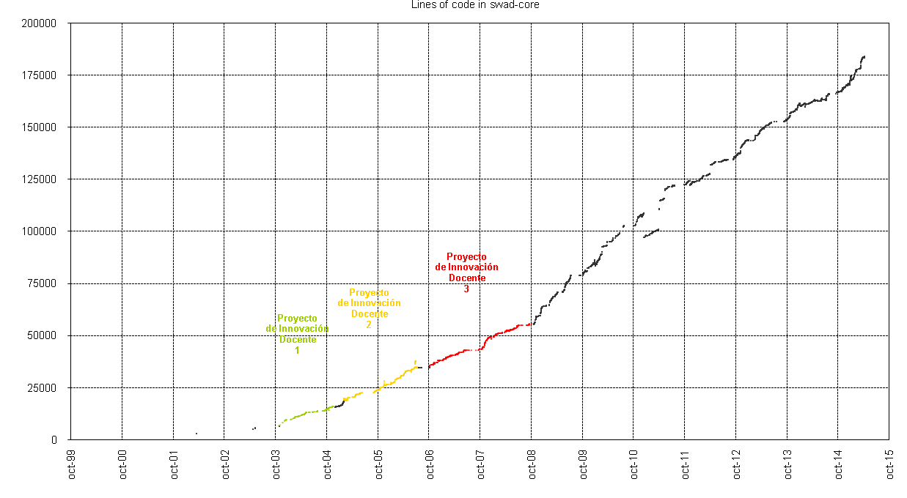

Free software
SWAD
is free software, so it can be used at any university or educational institution
(schools, colleges, academies, ...),
and other programmers can contribute to its development.
Downloading and installing
You can download all the software from the download page
respecting free software licenses indicated in each case,
and install it by following the steps in the installation procedure.
Collaborate in the development
"Cuando me preguntan cuándo estará listo un programa, contesto:
depende de cuánto trabaje usted en ello."
--Richard Stallman
1
SWAD not assigned a budget for its development,
although it has received some scholarships in teaching innovation projects.
Therefore potential partners generally should not expect money for their work,
but learning, fun, achievement, recognition, and, if desired,
a certificate of collaboration in the development of SWAD.
Description of modules
SWAD platform is implemented mostly as a single program
(actually one for each language)
that uses the CGI specification.
This program runs on the server
every time a user clicks a button or link within the platform,
queries database and performs the necessary calculations for the current action,
and generates all the HTML5 code
that is sent to client.
Main core (swad-core)
Programmed by Antonio Cañas Vargas.
SWAD main core (the CGI mentioned above) performs almost all the functionality of the platform,
with the exception of photographs processing, chat, log in from a extern web service,
and mobile applications.
The module has been programmed in ANSI C
and the database can use
database management system
MySQL or MariaDB.
The reader will probably think "a web application written in C?"
Yes, it is not usual, but... ;-)
A little more seriously, we could say that we have developed swad-core
following the philosophy of The Handmade Manifesto.
SWAD core has about 323 000 lines of source code.
Each executable program (one for each language) has a size of 2.7 MiB
and in most of the possible actions
generates the page in few milliseconds.
The following graph shows the evolution of the number of lines of code.
Each point on the graph represents a version.
All versions are listed in the change log.

For encryption of passwords
the SHA-512 algorithm is used.
For encryption of session codes, users' photograph names and user codes sent as parameters,
the SHA-256 algorithm is used.
In both cases we have employed the Olivier Gay's C implementation.
SWAD core uses DropzoneJS,
an open source library that provides drag'n'drop file uploads with image previews.
SWAD core uses the tool gSOAP
to implement the SOAP server protocol
of the web service.
Photo processing module (fotomaton)
Programmed by Daniel Jesús Calandria Hernández
and Jesús Mesa González.
The photographic processing is performed by a separate module written in
C++.
The first version of this module was developed by former students of Computer Engineering
Jesús Álvarez Martín and Alberto Rodrigo Gámiz.
Currently it uses a version completely rewritten
by Daniel Jesús Calandria Hernández
and Jesús Mesa González.
The module detects human faces present in the picture,
resize the image, and performs various improvements
such as checking the clarity of background, noise removal, contrast and saturation improvement, and white balance.
The module uses the Intel OpenCV library,
and detects human faces present in images using a cascade classifier trained by AdaBoost algorithm
(Paul Viola, Michael Jones: "Robust Real-time Object Detection". International Journal of Computer Vision, 2001).
Photographs averaging modules (foto_mediana and foto_promedio)
Programmed by Daniel Jesús Calandria Hernández
and Jesús Mesa González.
The photographs averaging is performed by two separate programs
written in C++.
These two programs respectively calculated the median and average
(pixel by pixel) of several photographs,
and are called by swad core to calculate the average photograph for each degree.
Chat server (swad-ircd)
Programmed in C++
by Daniel Jesús Calandria Hernández.
Chat client (swad_chat)
Chat client is a Java applet
programmed by Daniel Jesús Calandria Hernández.
Application for Android devices (SWADroid)
SWADroid
is an app for Android devices.
You can download it for free from Google play.
SWADroid has been programmed by:
SWADroid is free software. The source code is available in GitHub forge
https://github.com/Amab/SWADroid
under GNU GPLv3
and GNU LGPLv3 licenses.
Application for iOS devices (iSWAD)
iSWAD
is an app for iOS devices.
You can download it for free from App Store.
iSWAD has been programmed by:
iSWAD is free software. The source code is available in GitHub forge
https://github.com/mitomono/iSWAD
under Apache License 2.0.
|
 Antonio Cañas Vargas, 1999-2022
Antonio Cañas Vargas, 1999-2022
{kind=link}